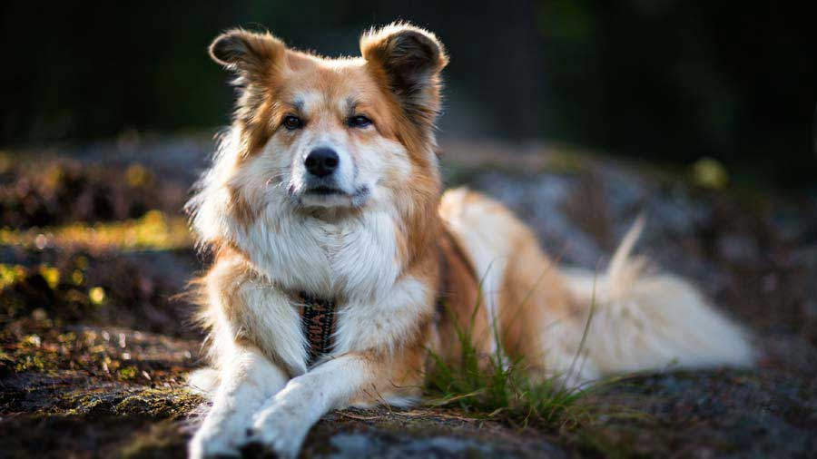
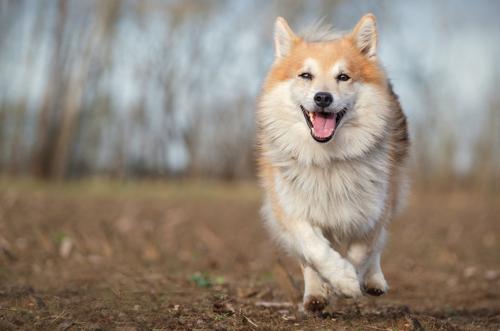
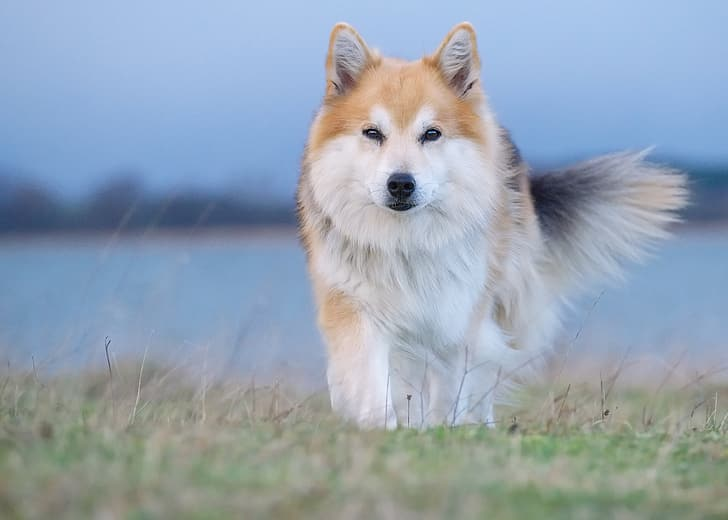
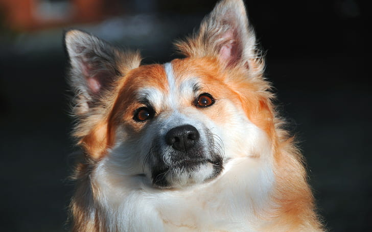

Icelandic Sheepdog

origin
United States
size
Large
color
Others
type
Purebred
breed group
Working (AKC:1937), Guardian Dogs (UKC)
character
Smartest
temperament
Affectionate, Faithful, Intelligent, Loyal
height
24-28 inches (61–71 cm)
weight
85-110 pounds (38–50 kg)
geography
Europe
overview
Finnish Lapphunds, with their luscious coat, sweet spitz-like face, and profusely coated tail curving over the back, are instantly recognizable as Nordic dogs. Built for hard work in frigid temperatures north of the Arctic Circle, Lappies stand about 20 inches at the shoulder and are surprisingly powerful for their size, with well-developed muscles and substantial bone beneath a double coat that comes in many colors and patterns. Lappies are agile dogs of effortless movement, capable going from a trot to full gallop in a second flat.
Few Lappies today in America have seen a reindeer, but they adapt well to other kinds of work, including obedience, agility, tracking therapy, and herding other types of livestock. When working, Finnish Lapphunds are agile, alert and noisy. While interacting with people, however, the breed is calm, friendly, and very submissive. Lappy puppies are adorable, but new owners should take care to remember that a small puppy grows up quickly and needs to learn good habits early on. Socialization, puppy classes and basic training will help him learn those habits.
history
The region extending across northern Norway, Sweden and Finland is sometimes called Lapland, and it is home of the Sami people. For centuries, the Sami depended on the reindeer for food. Life in this harsh environment would not have been possible without the Spitz dogs which helped the Sami hunt, and later herd, the reindeer. Eventually, these herding Spitz type dogs developed into three breeds, the Swedish Lapphund, the Lapponian Herder, and the Finnish Lapphund. The Finnish Lapphund is the original native breed, and is still used today as a herding dog. The breed first came to the United States in 1987.
Photo Gallery


